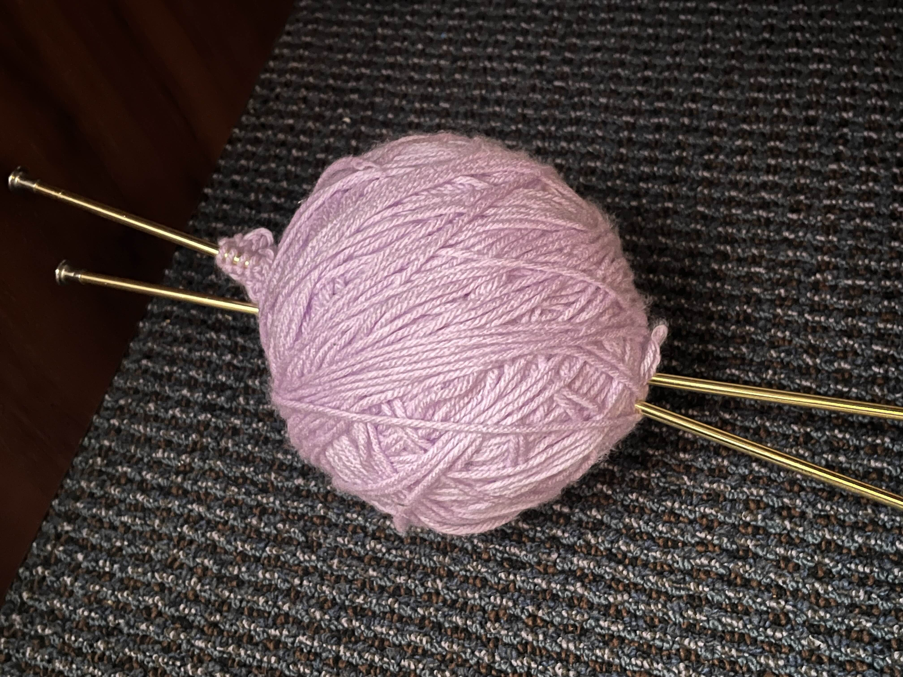
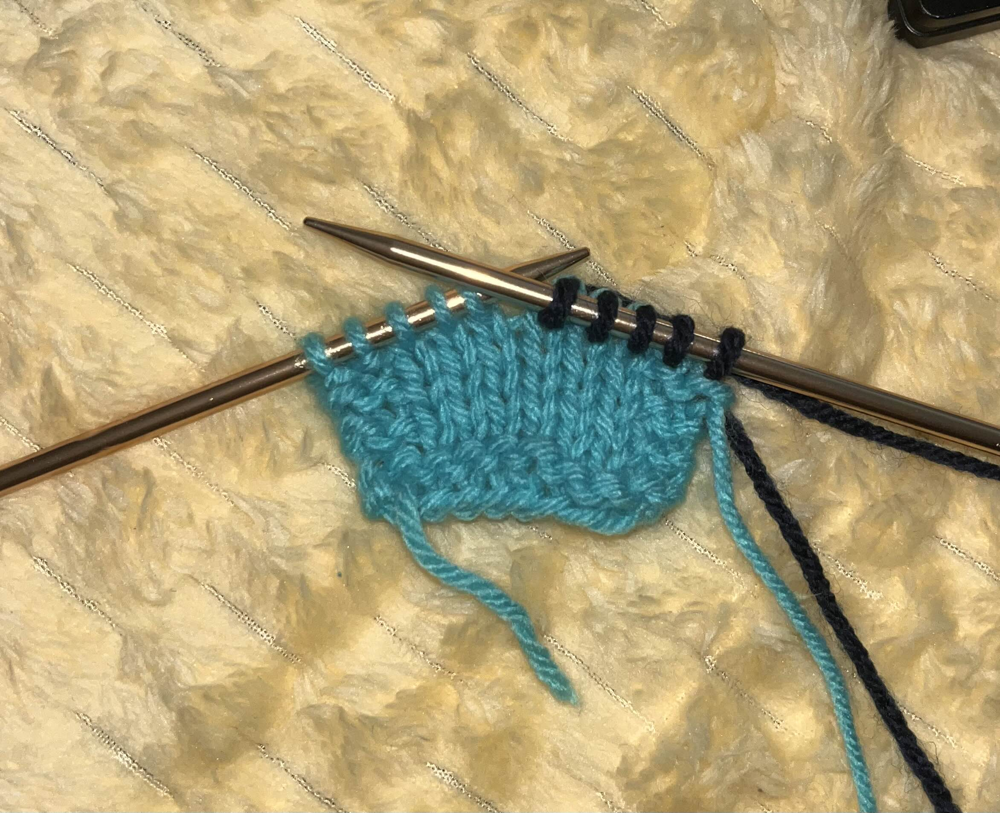
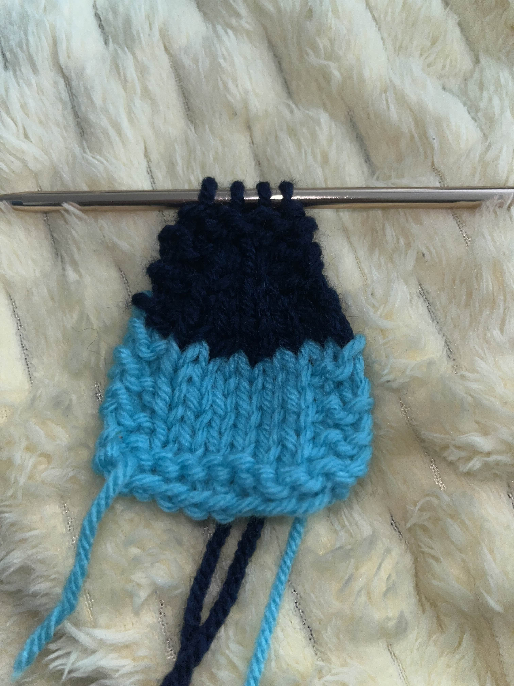
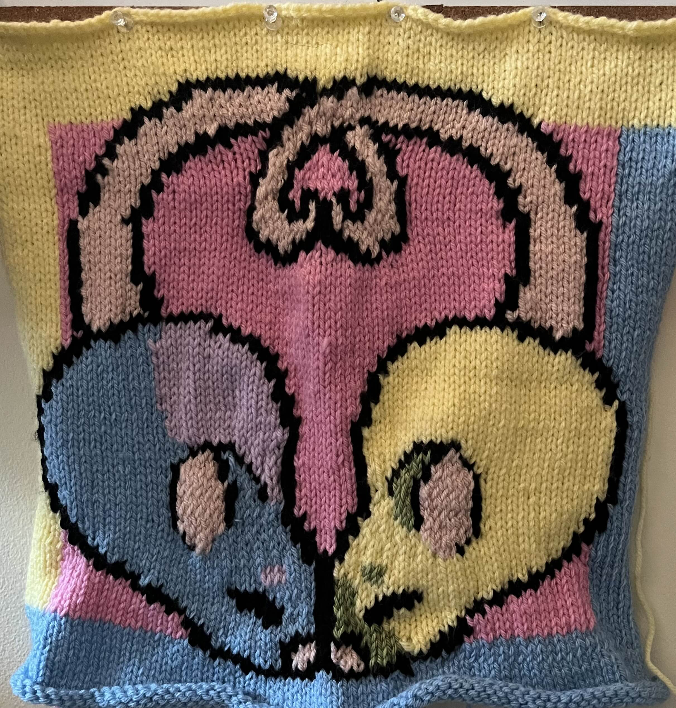
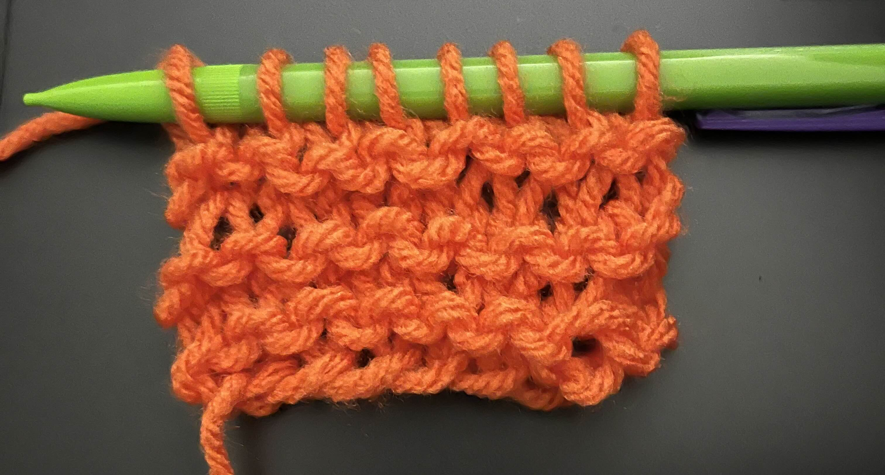
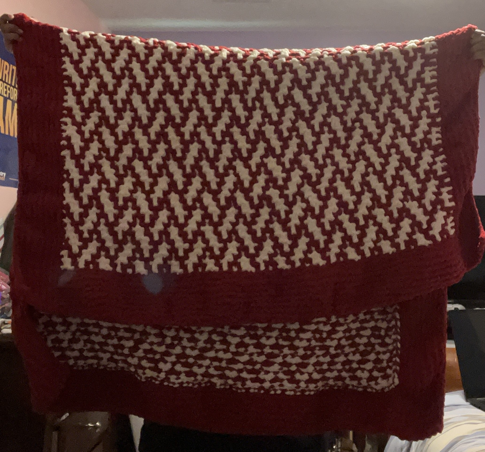
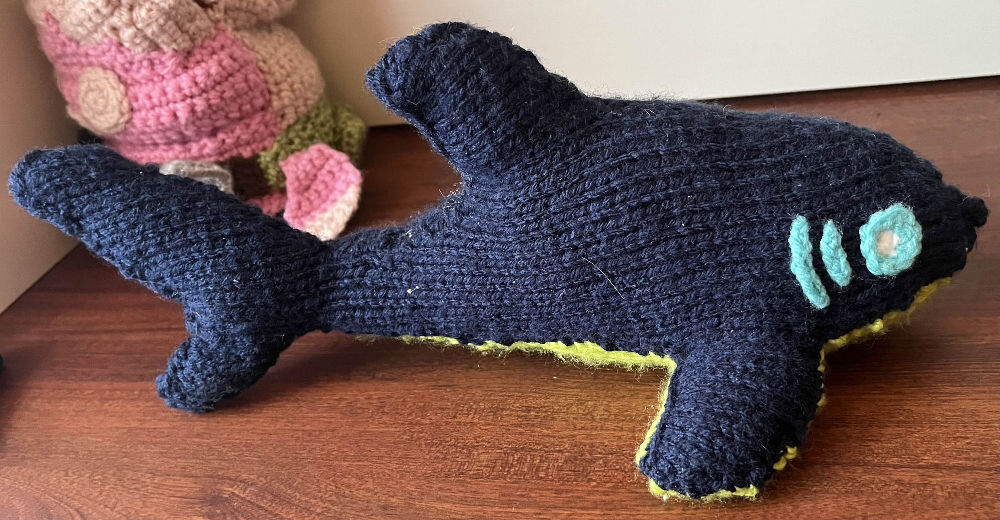

Knitting is the art of creating fabric using needles and yarn. By mastering different stitches, you can create many different shapes and textures.

Two knitting needles inside of a ball of yarn.
I enjoy it quite a lot, due to how creative you need to be to create good work, and how it feels personally calming. I have been knitting for quite a long time, and yarn work has become something my friends know me by.
How Knitting Works
Knitting is a kind of weaving that uses the yarn on one needle to hold the yarn on the other. It is typically done from right to left and then turned, meaning your left needle holds the stitches from the previous row as your right needle creates the new stitches.

The new row, shown in dark blue, is on the right needle. These loops close the lighter-colored stitches from the left needle while creating new ones.
Once the row is finished, the needles are swapped between your hands and a new row is started.
The physical length of a row is determined by the number of stitches it has. So, to create shapes, you can change the amount of stitches used in some rows. Special stitches called "increases" and "decreases" can add or take away stitches and change the length of their rows.

Using decreases every 3rd row, I have added a triangle to this rectangular knitwork.
Why I like Knitting
Here are a few things I really like about knitting:
It's easy to learn. There are only two basic stitches you need to know to knit. Knit stitches, which create the front side of the work, and purl stitches, which create the back side. While there are some more complex stitches you can also learn, they are all also based on knitting or purling, and you don't absolutely need them to create something nice.
It's easy to make colorful. Switching colors is made easier with knitting than it would be in some other forms of yarnwork, which allows me to more easily make complex knitting designs.

My most complex work to date. It has ten different colors of yarn!
I can do it passively. I like to watch movies, listen to YouTube videos, and even read books while I knit. It keeps my fidgety hands busy so I can focus, with the added bonus of getting something nice out of it.
It teaches you to be patient and disciplined. Creating finished knitwork often takes days, weeks, or even longer. I spent two months over the summer knitting a blanket for my mother. Even when if gets frustrating, or when you think your knitwork won't come out well, you have to stick it out. The only other option is to not have the knitwork you wanted to create!
My History with Knitting
I learned to knit in my 7th grade art class, following 3 minute tutorials with mechanical pencils for needles and embrodery floss as yarn. I created a terrible peice of raggedy fabric less than 4 inches large, and I knew I could do better. So I did. My next project was a "blanket" using real orange and black yarn this time, but the pencils were still my tools of choice. I gave up after two squares, but my interest was reignited when my grandmother was giving away old knitting supplies she never used. I also learned to crochet, which took priority for a while, as crocheting is way faster than knitting. As I got to college though, I began to miss the slowness of knitting, and crocheting gave me finger cramps in a way knitting didn't. I got back into knitting because the fabric was thinner and better for creating garments. My next big project is to knit a sweater or two, but I'm also currently working on an application that can make creating knitting patterns more streamlined!

An attempt to recreate the less-than-stellar beginnings of my knitwork. Unfortunately, this one is missing the giant holes from dropping stitches.
Where I Learned To Knit
I mostly learned to knit from online resources:
YouTube
Knitting and crochet blogs
Free patterns with detailed instructions for beginners
But some other great resources for knitting were starter kits for beginners. Both Hobby Lobby and Barnes and Noble sell plenty of knitting kits for beginners that are easy to follow and can create some really cute peices. There are often knitting and crochet patterns on the side of packaged yarn as well. A lot of my bigger projects were created from patterns found there, including a full length blanket.

I got the pattern for this huge planket from the side of the wrapping on Bernat Blanket yarn.
The Effect that Knitting has had on Me
Learning to knit gives you plenty of projects to make. I don't have much personal use for them, so I've taken to giving away most of my work as gifts!

A knitted shark plushie I gifted to my boyfriend.
It makes me very happy to give away cute custom gifts and trinkets to my friends, so much so that I really don't even want to knit for myself. I don't even see the point in creating something I'll just let sit on a shelf. Knitting has made me a much more creative and giving person!